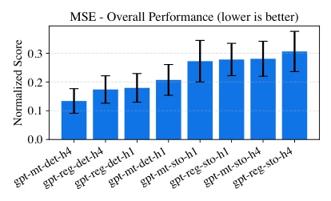
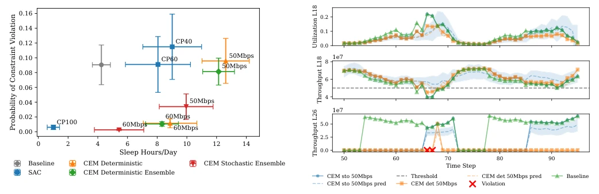
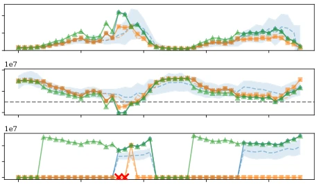
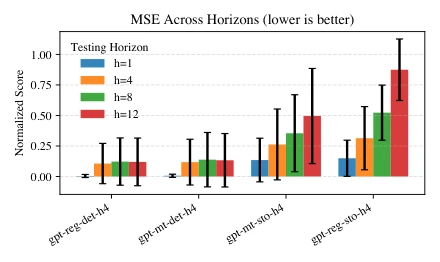
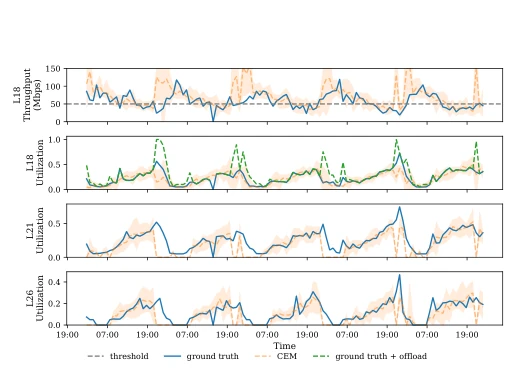
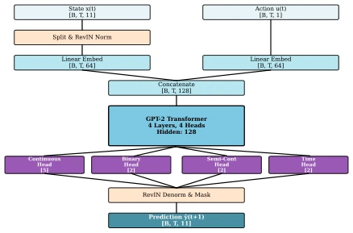
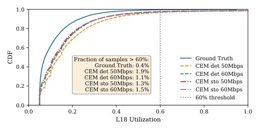
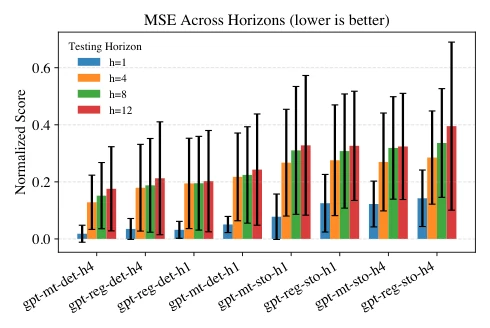

Maxime Bouton, Ioanna Mitsioni, Simon Lindståhl, Jaeseong Jeong abspdf
论文点评Review
这篇论文试图把具身智能里的 World Model 概念硬塞进移动通信网络优化里，算是跨界玩票。优点很明显：把模型学习和策略优化解耦，换个目标函数不用重训，这比那些 RL 代理强多了，毕竟网络 KPI 变了还得重新调参太麻烦。多任务架构处理半连续特征（比如休眠状态）挺聪明，解决了传统回归模型对动作不敏感的问题。但槽点也不少：真实网络数据太噪，随机模型反而不如确定性模型准，这有点反直觉。而且真实场景下没法直接关基站测试，只能搞反事实推演，这“性能提升”到底能不能落地，还得打个问号。总的来说，是网络自动化领域的一次有趣尝试，但离真正“智能运维”还有距离。
This paper attempts to forcibly integrate the World Model concept from embodied intelligence into mobile communication network optimization, which counts as a cross-disciplinary experiment. The advantages are obvious: decoupling model learning and policy optimization, allowing a change in objective function without retraining, which is much superior to those RL agents, after all, re-tuning parameters when network KPIs change is too troublesome. The multi-task architecture handling semi-continuous features (such as sleep states) is quite clever, solving the problem where traditional regression models are insensitive to actions. However, there are also many drawbacks: real network data is too noisy, random models are actually less accurate than deterministic models, which is somewhat counter-intuitive. Moreover, in real scenarios, base stations cannot be directly turned off for testing, only counterfactual inference can be performed, so whether this "performance improvement" can actually be implemented remains questionable. Overall, it is an interesting attempt in the field of network automation, but still far from true "intelligent operations and maintenance".
研究动机Motivation
随着移动网络密度和复杂度激增，运营商面临服务保证和能效的双重压力 [1]。传统的规则策略缺乏适应性，而基于强化学习（RL）的方法虽然流行，但一旦优化目标微调（比如从节能切换到高吞吐），往往需要重新训练，工程成本高昂 [3-5]。此外，现有 RL 方法在大规模基站控制中面临样本效率低的问题。虽然 World Model (WM) 在机器人领域能提升样本效率 [6, 7]，但直接应用于网络数据面临挑战：网络数据具有表格化、异构且部分可观测的特性，传统 WM 难以捕捉特征间的复杂交互及动作敏感性 [16]。因此，本文旨在提出一种基于 WM 的控制器，能够处理异构数据、估计不确定性，并实现无需重训的动态目标优化。
With the surge in mobile network density and complexity, operators face dual pressures of service assurance and energy efficiency [1]. Traditional rule-based strategies lack adaptability, and while reinforcement learning (RL) based methods are popular, once optimization objectives are fine-tuned (e.g., switching from energy saving to high throughput), they often require retraining, incurring high engineering costs [3-5]. Furthermore, existing RL methods face issues of low sample efficiency in large-scale base station control. Although World Model (WM) can improve sample efficiency in the robotics field [6, 7], direct application to network data faces challenges: network data possesses tabular, heterogeneous, and partially observable characteristics, making it difficult for traditional WM to capture complex interactions between features and action sensitivity [16]. Therefore, this paper aims to propose a WM-based controller capable of handling heterogeneous data, estimating uncertainty, and achieving dynamic target optimization without retraining.
The overall process is divided into two stages: model learning and planning control. First, a data-driven World Model is constructed, adopting a multi-task learning architecture to handle heterogeneous features. State $x_t$ is decomposed into continuous, binary, and semi-continuous features, which are embedded separately and processed through a Transformer backbone network, finally output through task-specific heads. This design explicitly models the dependency of binary states (such as sleep) on semi-continuous metrics (such as throughput), solving the problem where traditional regression models are insensitive to actions. Secondly, uncertainty estimation is introduced, capturing epistemic uncertainty through ensemble learning, and capturing aleatoric uncertainty inherent in the system through random model sampling. At the control level, network optimization is modeled as a rolling horizon control problem, using the Cross-Entropy Method (CEM) to search for the optimal action sequence within the prediction horizon. CEM samples action sequences and utilizes WM to simulate trajectories, calculating the trade-off between cost (energy consumption) and constraints (quality of service), finally executing the first action. This method decouples the model and policy, allowing dynamic adjustment of optimization objectives without retraining the model.
Experiments are divided into two parts: simulation and real data. The simulation environment is based on a calibrated 5G network simulator, comparing threshold baselines, SAC reinforcement learning, and the proposed CEM+WM method. Results show that the WM controller outperforms RL and baselines on the Pareto frontier of sleep duration and quality of service constraints, and the random model is more conservative. Real data experiments use 6 months of live network data; due to the inability to intervene directly, counterfactual action evaluation is adopted. Results indicate that the multi-task model can accurately predict the utilization dropping to zero caused by the "off" action, while the regression model fails. Open-loop evaluation shows that the WM method can significantly increase sleep duration, but in some scenarios, coverage layer utilization may exceed limits. Ablation experiments confirm that the multi-task architecture and uncertainty modeling are crucial for improving action sensitivity and control robustness.
其他图片Other Figures

Fig. 2. Overall test time prediction errors (mean and standard deviation) averaged over all features and all prediction horizons up to 12.

Fig. 3. Closed loop performance using gpt-mt-sto-h4 and gpt-mt-det-h4 for stochastic (total uncertainty) and deterministic (only epistemic) ensembles, respectively. We also test a non-ensemble deterministic baseline, “CEM Deterministic”, without uncertainty quantification. All baselines are examined across different throughput constraints (50 Mbit/s, 60 Mbit/s for CEM and CP = 40, 60, 100) for SAC.

Fig. 4. Example of a closed-loop simulation for a sector. We run the same episode using the CEM controller with two different world models, one with uncertainty quantification and one without. The crosses indicate constraint violations. The shaded area is the variance estimated from 40 different particles sampled from the stochastic model.

Fig. 5. Test time prediction errors (mean and standard deviation) for the real- network data. Errors are averaged over all features.

Fig. 7. Example of running the CEM policy with a stochastic model on a sample of the real data. In orange, we visualize the prediction by using the counterfactual actions as input. The shaded area is the variance estimated from 40 different particles sampled from the stochastic model. The green dashed line represent the offloaded utilization assuming a worst case scenario.

Fig. 8. The architecture for the gpt-mt-det model.

Fig. 10. Estimated increase in utilization if the counterfactual actions proposed by CEM were applied in the real system, assuming the worst case scenario where all traffic is offloaded to the L18 layer.

Fig. 9. Test time prediction errors (mean and standard deviation) averaged over all features for different test prediction horizons.